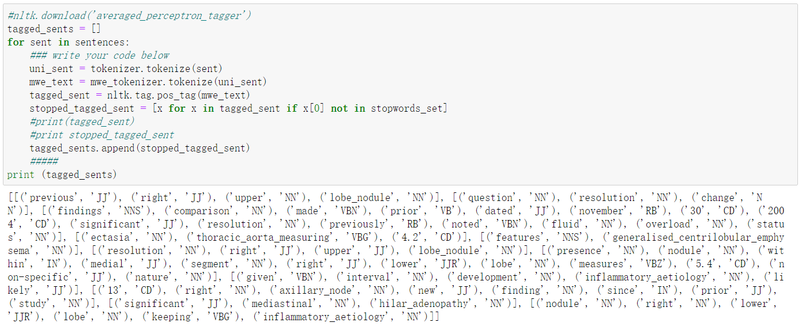

Text-处理步骤
一些可能用到的libray：
from bs4 import BeautifulSoup as bsoup import re import os import nltk from nltk.collocations import * from itertools import chain import itertools from nltk.tokenize import RegexpTokenizer from nltk.tokenize import MWETokenizer import matplotlib.pyplot as plt %matplotlib inline from nltk.corpus import reuters全转换为小写：
raw_text = raw_text.lower()Word Tokenization：
from nltk.tokenize import RegexpTokenizer tokenizer = RegexpTokenizer(r"\w+(?:[-.]\w+)?") unigram_tokens = tokenizer.tokenize(raw_text)Tokenize the raw_tex with multi-word expressions.（in a list）:
例如：uni_voc = list(set(unigram_tokens)) uni_voc.append(('lobe', 'nodule')) from nltk.tokenize import MWETokenizer mwe_tokenizer = MWETokenizer(uni_voc) mwe_tokens = mwe_tokenizer.tokenize(unigram_tokens)Stop Words Removal:
from nltk.corpus import stopwords stopwords_list = stopwords.words('english') stopped_tokens = [w for w in mwe_tokens if w not in stopwords_set]获得各词词性：
import nltk.data sent_detector = nltk.data.load('tokenizers/punkt/english.pickle') sentences = sent_detector.tokenize(raw_text.strip()) tagged_sents = [] for sent in sentences: uni_sent = tokenizer.tokenize(sent) mwe_text = mwe_tokenizer.tokenize(uni_sent) tagged_sent = nltk.tag.pos_tag(mwe_text) stopped_tagged_sent = [x for x in tagged_sent if x[0] not in stopwords_set] tagged_sents.append(stopped_tagged_sent) print (tagged_sents) 